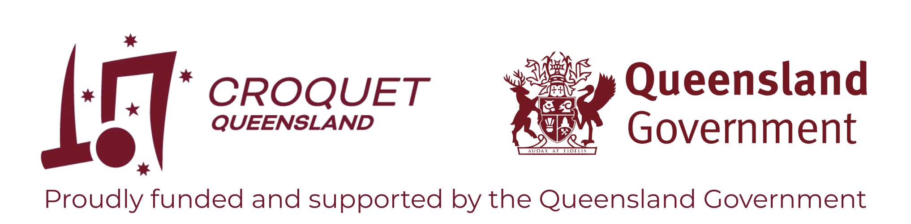
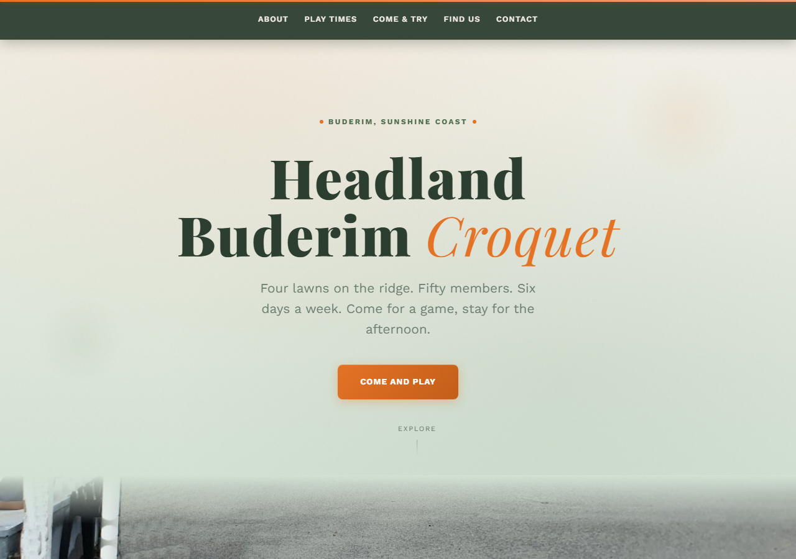

Your Club Deserves a Great Website
It is important that every club is visible online.
To help out, CAQ is offering your club a custom designed website on your own domain name.
It is simple to do and this website will explain everything.

Headland-Buderim Croquet Club
Before this goes public, we want to test and develop it. The first demonstration is Headland-Buderim. We used this page to populate their website. As you can see, it's just mainly text, but info on playing times and things. CroquetClaude made the site autonomously with its choice of style (notice it picked up the club colours).

There are two parts to making a website: content and design. At the moment we are holding the content constant, designing different looking sites on the same set of data from Headland.
So when choosing designs you like, remember this is for a simple website. We will do complex ones next.
It is easy to trick Claude, but to get the best out of it we need to interact with it in good faith. We will get more from this nominating sites in the spirit of accomplishment than wasting water and electricity tormenting the LLM with nonsense.
Three steps. That's it.
Find something you like
Browse the galleries below. Find a website whose style, colours, or feeling appeals to you. Send us the link, or just describe what you're after.
Send us your details skipped for now
Photos, documents, playing times, contact info. Whatever you have. Word docs, emails, photos of a noticeboard. We'll sort it out.
We build, you refine
Your site goes live on its own address. Don't like something? Tell us. We'll change it. It's a conversation, not a one-off delivery.
Browse for inspiration
Thousands of professionally designed websites. Find one that catches your eye.
Need more than a website?
Websites are just the start. If your club needs a digital tool, something to make life easier for your committee, your members, or your visitors, tell us what the problem is. We'll build it.
- Booking systems
- Volunteer schedules
- Member portals
- Event pages
- Email newsletters
- Online forms
Ready to try it?
Send us a link to a website you like, your club's details, and any photos. Or just say hello.
hello@croquetclaude.com